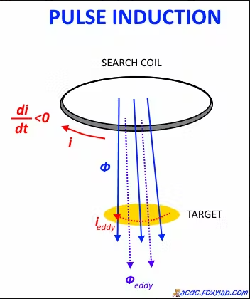
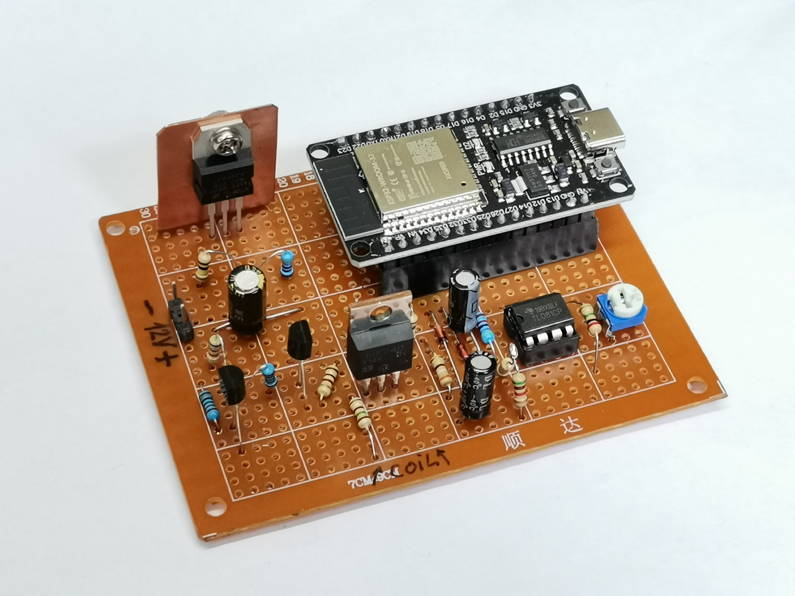
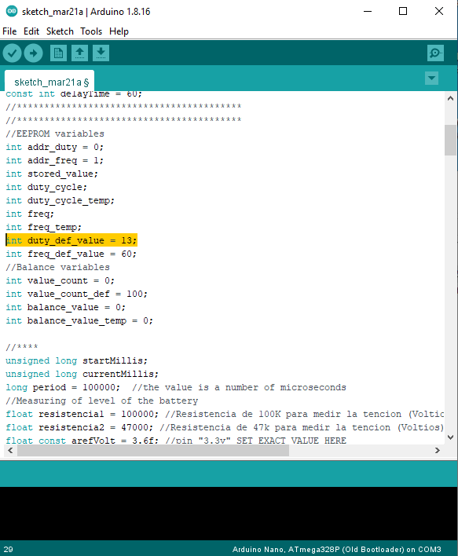
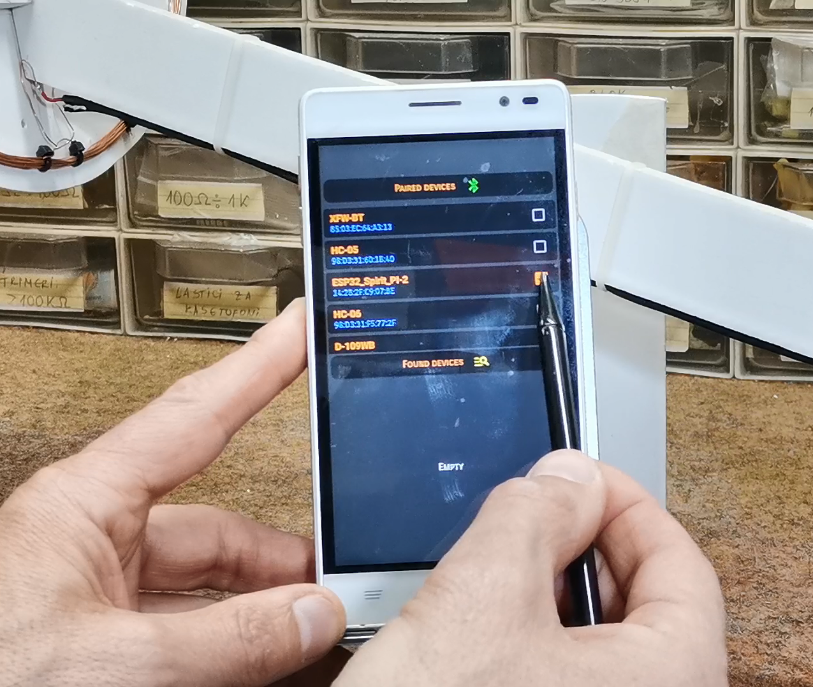
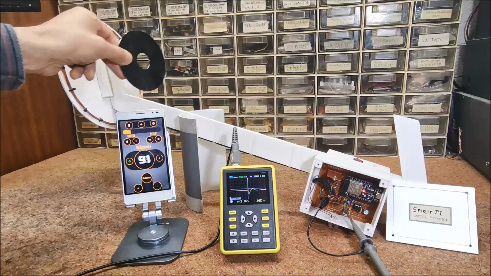

Overview
A Pulse Induction (PI) metal detector works by sending short pulses of electrical current through a coil to create a magnetic field. Each pulse lasts for a very short period, usually only microseconds. When the pulse is transmitted, the magnetic field spreads outward from the coil.
If a metal object is near the coil, it disrupts the magnetic field. The coil detects the change caused by the metal object, producing a reflected pulse that differs from the normal pulse.

This difference is processed and emitted as a sound or short beeps, with a frequency that changes depending on the distance and dimensions of the detected metal object.
Project Background
Previous versions of this detector used an Arduino Nano microcontroller. This version uses a more powerful ESP32 board, which also includes built-in Bluetooth. That makes the construction simpler because the microcontroller can exchange data directly with a smartphone.
The original project was created by Neco Desarrollo. The project idea combines a microcontroller and a smartphone: the microcontroller receives and transmits signals from the external detection circuit, while the smartphone provides higher-level processing and audiovisual presentation.
This cooperation between simple external electronics, an ESP32, and a smartphone is the central idea of the project.
Sponsor Note
This project description also mentions PCBWay, which organized its 11th badge design contest from March 3rd to April 31st. The contest invited badge designs and offered prizes in cash and coupons.
Input Circuit
The input circuit is almost identical to those used in many PI metal detectors. It includes a search coil, an operational amplifier, a MOSFET switching stage, and supporting passive components.
Main Components
- A search coil made from 20 turns of insulated copper wire with a cross section of 0.4 mm², formed as a circle with a diameter of 20 cm.
- An operational amplifier IC. The TL081 was used here, although OP07, LM741, and CA3130 ICs worked almost identically.
- A power MOSFET with one or two driver transistors. In this build, IRF740, BC547, and BC557 parts were used, although approximate replacements can be used.
- A 7805 voltage stabilizer to power the microcontroller.
- Several resistors, capacitors, and diodes.

The detector is powered by three lithium batteries connected in series, providing approximately 12 V. The maximum total current consumption is about 150 mA.
Android Application Setup
During initial testing, the Android application did not fully activate. Bluetooth connected normally, but when the refresh button was pressed, the application disappeared from the screen or showed an error depending on the Android OS version.
Because the application was not modified, the solution was to adjust the Arduino-side code. The initial duty cycle value was changed from 16 to 13.

After this change, the Android application worked normally and testing could begin.
Application Workflow
After opening the application, go to setup and select the metal detector version named Spirit PI. Then open Bluetooth settings, select ESP32-Spirit PI-2, and return to the main screen.

Pressing the refresh button makes the device ready to operate. The application also allows quick adjustment of generated frequency and duty cycle values, which changes detector performance depending on whether the target is a large or small metal object.
Signal Observation
An oscilloscope can be used to trace the shape and changes of the signal brought to the microcontroller input for analysis. At the beginning, the signal has a normal shape. When a metal object approaches the search coil, the amplitude and duty cycle of the signal change.

The ESP32 detects this change and transmits the result through Bluetooth to the smartphone. The smartphone then provides the audio and visual notification.
Performance
In approximately realistic air tests, the detector reacts well, though the detection distance is significantly reduced when used on or near the ground. Its performance is almost identical to the previously presented Arduino Nano version, mainly because both versions rely on nearly the same Android application.
Conclusion
This project is a strong example of cooperation between a microcontroller and a smartphone. The ESP32 receives data from the external detection circuit and performs partial processing, while the smartphone handles more advanced processing and presentation.
The idea from Neco Desarrollo has potential beyond metal detectors. Since smartphones are widely available and provide high processing power, this approach can be applied to many other devices that benefit from simple external hardware paired with a capable mobile interface.